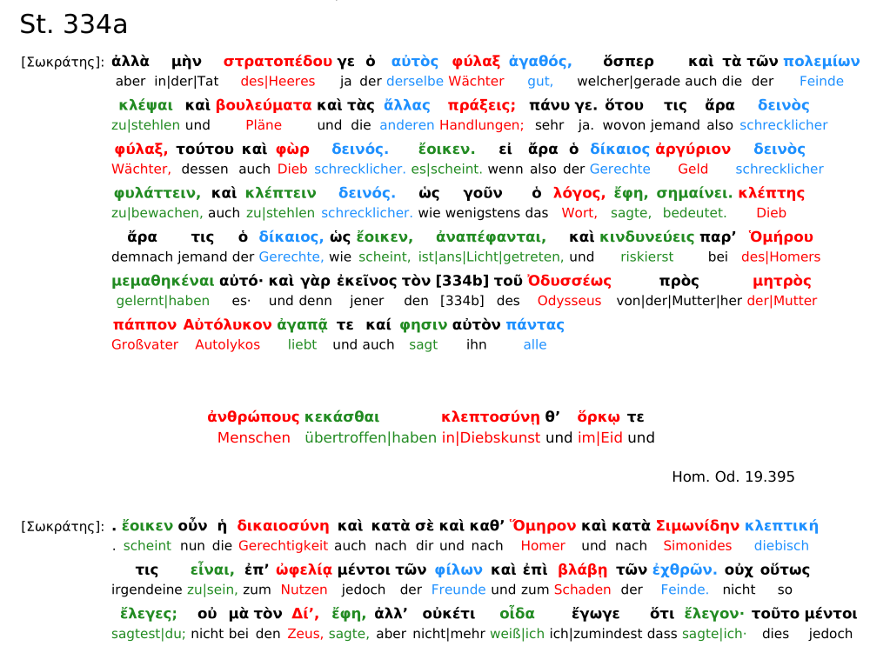
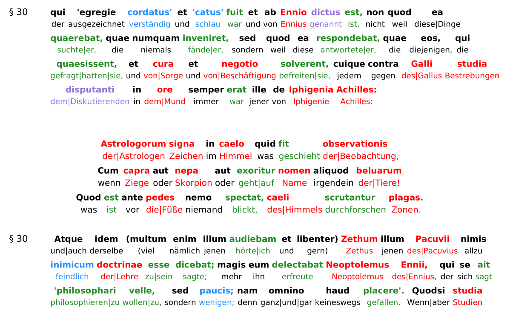
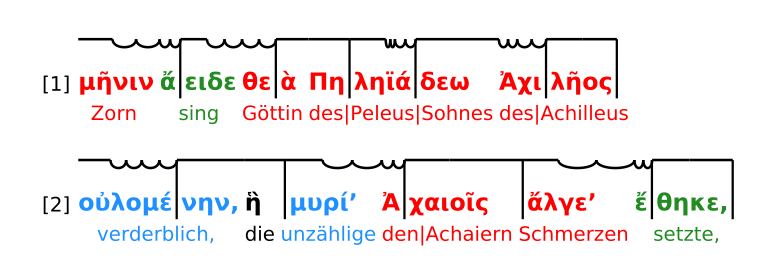
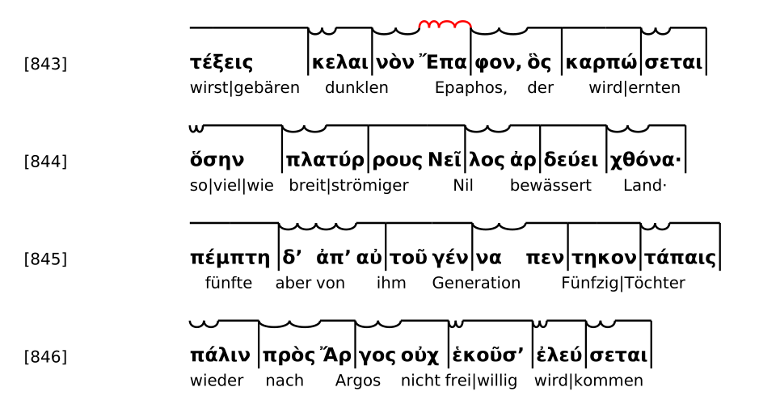

Diese neue Seite (16.11.25) bietet translineare Übersetzungen klassischer griechischer und lateinischer Texte. Der Prozess der "Übersetzung" wurde dabei vom relativ neuen Modell Chat-GPT5 (Thinking) durchgeführt. Ebenfalls wurden die grammatikalischen Kürzel durch die KI generiert. Bei einigen griechischen (vielleicht bald auch lateinischen?) Werken, vor allem Epen, gibt es aktuell optional noch eine metrische Darstellung (Versmaß-Darstellung).
Zusammenfassung: Für jedes Werk stehen verschiedene grundsätzliche Input-Texte zur Verfügung:
Jeder Input-Text erzeugt wiederum 2 x 2 x 2 = 8 verschiedene PDFs, die zur Auswahl stehen:
Hilfreich ist die Funktion PDF in neuem Tab öffnen, um das PDF sinnvoll betrachten zu können.
Die Grammatiktags werden im PDF hoch- oder tiefgestellt neben den Wörtern im antiken Text dargestellt. Hier eine Übersicht der verwendeten Tags:
Hochgestellte Tags (Wortart und Kasus/Modus):
Tiefgestellte Tags (Tempus, Modus, Genus Verbi, Pronomen):
Hinweis: Diese Tags können kombiniert auftreten,
z.B. (N)(Prä)(Akt) für ein Partizip im Nominativ, Präsens, Aktiv.
Es gibt einige Besonderheiten in manchen Werken: Bei manchen Prosa Werken sind im Text oft "Zitate", optional auch "Quellen" gekennzeichnet. Sofern die Quelle vorhanden ist, wird sie im PDF angegeben, falls nicht, wird der zitierte Text ohne Quellenangabe geliefert. Die Zitate und die dazugehören Quellenangaben stammen in jedem Fall aus der Perseus Seite zu dem Werk selbst und sind dort auch erkennbar. Es handelt sich oft um Teststellen wie: "Es sagte doch schon Homer, dass: .... " Die Zitate sind, um sie vom Text abzuheben, zentriert dargestellt. Hier einmal zwei Beispiele von Zitaten mit und ohne Quellenangabe:
Abbildung 1: Politeia 1 griechisch-deutsch, typisches Beispiel eines Zitates mit Quellenangabe.
Abbildung 2: Republica 1 latein-deutsch, typisches Beispiel eines Zitates ohne weitere Quellenangabe.
Für einige Werke ist eine Versmaß-Darstellung vorhanden, welche lange und kurze Silben kennzeichnet. Dabei sind lange silben durch waagerechte Linien über der Silbe gekennzeichnet und kurze Silben durch zwei kleine Wellen (uu). Dabei ist es stets so, dass die Grammatikkürzel (falls eingeschaltet) mit zum Wort gehören und sich die Darstellung auch über sie erstreckt. Bei Tragödien sind ebenfalls teilweise Versmaße gegeben. Dabei sind Zäsuren, also ungerelmäßig auftretende kurze Silben, die anstelle von einer einzelnen langen oder kurzen Silbe stehen, stets rot und nach OBEN gewölbt dargestellt (anstatt schwarz und nach unten gewölbt, wie normale kurze Silben). Die Informationen zu langen und kurzen Silben stammen von der sehr schönen und wertvollen Seite Hypotactic.com und können dort eingesehen werden. Abbildung 3: Ilias 1 griechisch-deutsch, typischer Hexameter in Versmaßdarstellung.
Die Tragödien, Oden und Hymnen haben eine Versmaßdarstellung, die aufgrund der Komplexität der verschiedenen Versmaße nur die Längen und Kürzen quantitativ darstellt, nicht aber die Füße in jedem Fall eingezeichnet hat (diese ließen sich durch den Builder manuell hinzufügen, s.u.).
Wichtig: Bekannter Fehler: Bei Ellisionsapostrophen tritt leider in der Versmaßdarstellung aktuell ein Fehler auf. Bei Wörtern wie γʼ oder σʼ oder δʼ, die eigentlich keine eigenständigen Silben sprachlich darstellen, sondern nur durch Verschmelzung mit dem Nachfolgenden zur Silbe werden, wird aktuell eine kurze Silbe (uu) über dem δʼ oder σʼ angezeigt, die natürlich nicht wirklich sprachlich realisiert wird. Hier erkennbar an Zeile 845 im gefesselten Prometheus, bei dem δʼ ἀπʼ als zwei kurze Silben beschrieben wird, obwohl es klarerweise nur eine sein kann. Eine Zäsur des Versmaßes (hier 6-füßiger Jambus) ist in Zeile 843 zu sehen.
Abbildung 4: Prometheus griechisch-deutsch, Versmaß Version, typischer 6 füßiger Jambus mit Zäsur in rot und Ellisionsapostroph-Bug in Zeile 845.
Der PDF Builder ist dazu da, eigenständig PDFs erzeugen zu können, um kleine Fehler oder ungünstige Übersetzungen der Wörter anzupassen und Farben und Grammatikkürzel zu individualisieren. Den PDF Builder ruft man auf, indem man auf einer Werkseite (egal welches Werk) auf den dunkelgrünen Button "PDF aus Entwurf erstellen" klickt. Es öffnet sich darauf die Tag- und Farbkonfigurationstabelle. Mit dem Klick unten rechts auf PDFs erstellen, werden dann die PDFs erzeugt (es dauert eine kurze Zeit, bis sie in der PDF-Ansicht unter Entwurf angezeigt werden). Änderungen im Text können vorgenommen werden, indem der translinear.txt manipuliert wird und daraus ein neues PDF erzeugt wird. Eine Beispielhafte Vorgehensweise ist diese:
Auf einer Werkseite oben links mit "Entwurf.txt herunterladen" die Basisdatei (translinear.txt) herunterladen.
• Vollständigen Text laden: Es ist sehr
empfehlenswert, den "ganzen" Text herunterzuladen und nicht
vorher Symbole durch die Buttons
"Grammatik-Tags Anzeigen (Aus)"
und
"Metrum-Marker Anzeigen (Aus)"
auszuschalten. Sonst werden diese Symbole nicht in die .txt
Datei geladen und können später nicht mehr verwendet werden um Metrum-Darstellungen oder Grammatiktags zu erzeugen.
💡 Tipp: Es ist auch ohne Download möglich, den Text direkt im Browserfenster zu bearbeiten. Aber: Beim Herunterladen ist die Datei "permanent", während Änderungen im Browser verloren gehen, wenn man die Seite verlässt.
Die heruntergeladene translinear.txt Datei mit einem sinnvollen Text-Editor öffnen und nach Wunsch bearbeiten. Die Bearbeitungen können vielfältig sein, sollten aber gewissen Regeln folgen. Zum Einfügen neuer Dinge oder beim Ändern von Dingen sollte sich stets an der Grundstruktur der bereitgestellten translinear.txt Datei orientiert werden. Dies liegt daran, dass der Text eine gewisse Struktur haben muss um korrekt vom Builder verarbeitet zu werden. Es ist hilfreich, bei der .txt Bearbeitung das originale PDF parallel im Blick zu haben.
• Wortanzahl beachten: In jeder Zeile sollte stets die selbe Anzahl an Wörtern stehen, da der Code "Wort 1 unter Wort 1", "Wort 2 unter Wort 2" usw. stellt, um die translineare Darstellung zu erreichen.
• Pipe-Zeichen: Wörter wie
durch|das|Meer
(mehrere Wörter über
|
verbunden, AltGr + < auf der Tastatur) zählen als EIN Wort.
⚠️ Wichtig: Bei ungleicher Anzahl von Wörtern in antiker Zeile oder Übersetzungszeile verschieben sich die Zeilen gegeneinander und es steht nicht mehr das richtige Wort unter dem richtigen Wort!
• Übersetzungen ändern: Einfach das ungewünschte Wort der Übersetzungszeile mit dem richtigen tauschen.
• Antiken Text ändern: Auch der antike Text ist natürlich änderbar, wobei die Grammatiktags natürlich manuell gesetzt werden müssten, wenn man den antiken Text ändert. In der PDF Erstellung selbst ist keine "KI" am Werk, die Grammatiktags automatisch setzen würde.
• Grammatikkürzel bearbeiten: Individuelle
Grammatikkürzel sind einfach änderbar oder einzeln löschbar
(z.B.
(Aor)
Aorist ändern auf
(Imp)
für Imperfekt, falls ein Fehler im gegebenen Text vorliegt). Es
ist aber nicht möglich neue Kürzel einfach zu
"erstellen" (z.B.
(Pl)
für Plural oder
(Dep)
für Deponens) – neue Kürzel aller Art werden NICHT einfach so
erkannt und hoch- oder tiefgestellt.
• Überschriften einfügen/löschen: Manuell Überschriften einfügen oder löschen ist ebenfalls möglich:
== Strophe 1 ==
oder
== St. 18a ==
=== Chor ===
==== Text der großen Überschrift ====
• Zitate oder Quellen einfügen/löschen: Text, der im translinear.txt Dokument zwischen [Zitat Anfang] und [Zitat Ende] steht, wird als Zitat dargestellt. Text, der Zwischen [Quelle Anfang] und [Quelle Ende] steht, wird als Quelle dargestellt.
Aktuell gibt es in griechischen Input-Texten auf den Versmaß-Werkseiten sogenannte "Meter Marker", diese "kodieren" die Längen und Kürzen der Silben im Text:
i
= kurze Silbe
L
= lange Silbe
r
= kurze Silbe während einer Zäsur (rot und nach oben gewölbt
in der Versmaßdarstellung)
|
= Fuß-Trenner (z.B. 6 Füße pro Hexameterzeile, im PDF als
senkrechte Linie sichtbar)
Beispiel typischer Zeilen mit Meter-Markern (Ilias 1, griechisch-deutsch):
(1) μῆLνινi(A) ἄi|ειLδεi(Prä)(Akt)(Imv) θεi|ὰL(V) ΠηL|ληLϊiάi|δεωL(G) Ἀiχιi|λῆLοςL(G)|
(1) Zorn sing Göttin des|Peleus|Sohnes des|Achilleus
(2) οὐLλοiμέi|νηνL(Adj)(A), ἣL(Pr)(N) |μυLρίiʼ(Adj)(A) Ἀi|χαιLοῖςL(D) |ἄλLγεiʼ(A) ἔi|θηLκεL(AorS)(Akt),|
(2) verderblich, die unzählige den|Achaiern Schmerzen setzte,
(3) πολLλὰςL(Adj)(A) |δʼ(Pt) ἰφLθίL|μουςL(Adj)(A) ψυL|χὰςL(A) Ἄiϊi|διL(D) προiΐi|αLψενL(Aor)(Akt)|
(3) viele aber tapfere Seelen zu|Hades sandte|hin
(18) ὑLμῖνL(Pr)(D) |μὲνL(Pt) θεοὶL(N) |δοῖLενi(Aor)(Akt)(Op) Ὀi|λύμLπιiαi(Adj)(A) |δώLματiʼ(A) ἔi|χονLτεςL(Prä)(Akt)(N)|
(18) euch zwar Götter gäben Olympische Häuser habend
(19) ἐκLπέρL|σαιL(Aor)(Akt)(Inf) Πριiάi|μοιLοi(G) πόi|λινL(A), εὖL(Adv) |δʼ(Pt) οἴLκαδiʼ(Adv) ἱi|κέσLθαιL(Aor)(Med)(Inf)·|
(19) aus|plündern des|Priamos Stadt, gut aber heimwärts gelangen·|
(20) παῖLδαi(A) δʼ(Pt) ἐi|μοὶL(Pr)(D) λύL|σαιLτεi(Aor)(Akt)(Op) φίi|ληνL(Adj)(A), τὰi(Art)(A) δʼ(Pt) ἄi|ποιLναi(A) δέi|χεσLθαιL(Prä)(M/P)(Inf),|
(20) Tochter aber mir löset lieb, die aber Löse|gaben anzunehmen,
Die Marker i, r, L, | sollten nach diesen Regeln gesetzt werden:
2.2.1.) Grundregel: Direkt
nach jeder Silbe die entsprechenden Marker platzieren.
Beispiel:
μῆLνινi(A)
(Lang-Kurz),
θεi|ὰL(V)
(Kurz-Lang)
2.2.1) Fuß-Marker:
Wenn ein Maß vollendet ist, einen
|
setzen.
Beispiel:
μῆLνινi(A) ἄi|
(Lang-Kurz-Kurz → Hexameter vollständig,
ἄi|
trägt Kurz- und Fuß-Symbol gleichzeitig)
2.2.2) ⚠️ Wichtige Zusatzregel:
Der Marker
|
steht niemals am Ende eines Wortes. Falls er
dort stehen müsste, wird er an den
Anfang des nächsten Wortes gerückt.
❌ Falsch:
ἣL|(Pr)(N) μυLρίiʼ(Adj)(A)
✅ Richtig:
ἣL(Pr)(N) |μυLρίiʼ(Adj)(A)
2.2.3) Sonderbehandlung Ellisionsapostrophe:
Bei Silben mit Ellisionsapostrophen wie
δʼ(Pt), die keine eigenständig auszusprechenden Silben sind,
sondern nur mit der darauffolgenden Silbe verschmelzen, steht
KEIN eigenständiger Meter-Marker.
Beispiel:
|δʼ(Pt) ἰφLθίL|μουςL(Adj)(A)
→
δʼ(Pt)
trägt keinen Marker,
da es keine eigenständige Silbe ist. Es
erhält im PDF den Marker
L
von der rechts danebenstehenden Silbe, mit der es
verschmilzt → es entsteht
δʼL(Pt) ἰφL
als EINE lange Silbe "δἰφ".
Im abgrenzenden Vergleich dazu:
|δώLματiʼ(A) ἔi|
– hier liegt auch ein Ellisionsapostroph vor, was aber eine
eigenständige Silbe ist (δώLματiʼ(A)
= Lang-Kurz), daher trägt die Silbe ihr
i
als kurze Silbe noch
vor dem Ellisionsapostroph!
2.2.4) Vers-Ende: Am
Ende eines Verses wird ebenfalls ein
|
gesetzt (der Fuß, der den letzten Takt abschließt).
Die .txt Datei über den Knopf "Entwurf.txt hochladen" neu in das Entwurf --> PDF Fenster laden und damit in die entsprechende Werkseite einbetten.
Auf den dunkelgrünen Button "PDF aus Entwurf erstellen" klicken. Es öffnet sich die Tag- und Farbkonfigurationstabelle mit den "original"-Einstellungen voreingestellt.
• Tags konfigurieren: Nun kann man (optional)
die gewünschten Färbungen der Wörter, Hoch- und Tiefstellungen
der Tags, oder auch Unsichtbarmachung gewisser Gruppen von Tags
(ganz rechts:
"Tag nicht zeigen") konfigurieren. Dies ermöglicht zum Beispiel,
(Adv)
Adverb oder
(Prp)
Präposition nicht als Tag zu zeigen.
• Konflikte bei mehreren Tags: Bei Wörtern mit
mehreren Tags (wie Partizipe) können Konflikte auftauchen (z.B.
wenn man
"aktiv"
rot färbt, aber
"aorist"
blau).
• Prioritätsregel: Änderungen WEITER UNTEN in
der Tabelle überschreiben obere Einstellungen. Beispiel: da
"aktiv"
weiter unten in der Tabelle für Verben steht, überschreibt die gewählte Farbe des
(Akt)
Tags die hypothetische Blaufärbung von
(Aor)-getaggten Verben. Dies ermöglicht z.B. auch Adverbien rot zu
färben, aber komparative und superlative Adverbien anders, da
(Kmp)
oder
(Sup)
die
(Adv)-Farbe überschreiben.
Auf den Knopf unten rechts in der Tabelle "PDFs erstellen" klicken.
• Wartezeit: Nach ca. 1 Minute sollten rechts in der Werkseite im Fenster "PDF-Ansicht" die PDFs aus dem Entwurf erscheinen. Dazu sollte man statt den Reiter original den Reiter Entwurf anklicken.
• Automatische Varianten: Es werden automatisch immer mehrere Versionen erstellt: schwarz-weiß, farbig, mit/ohne Grammatik-Tags, mit/ohne fetter Schrift in der antiken Zeile.
⚠️ WICHTIG: Im Idealfall die PDFs herunterladen, da sie sonst vermutlich schnell verschwinden, wenn man die Seite verlässt!
Name / Firma
Straße und Hausnummer
PLZ und Ort
E-Mail: klemp.tobias@gmx.net
Die Inhalte dieser Seite wurden mit größter Sorgfalt erstellt. Für die Richtigkeit, Vollständigkeit und Aktualität der Inhalte können wir jedoch keine Gewähr übernehmen.
Die durch die Seitenbetreiber erstellten Inhalte und Werke auf diesen Seiten unterliegen dem deutschen Urheberrecht. Sie dürfen nicht kommerziell genutzt werden, wohl aber in jeder anderen erdenklichen Weise und dürfen auch gerne weiter verbreitet werden!